JEE Main 2024 (Session 2), 5 Apr Shift 1: worked solutions for review
Questions and options are NTA’s own images; the green option is NTA’s final key. Every solution below was written by Claude
and checked against NTA’s final key. It is not NTA’s solution. Please mark anything unclear or wrong.
Q1 · Mathematics · MCQ · ID 87827055608
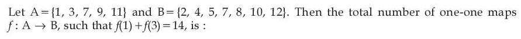
Hint 1: f is one-one, so f(1) and f(3) must be two different elements of B adding to 14.
Hint 2: Pairs from B with sum 14 and distinct entries: (2, 12), (4, 10) in either order. Then map the other 3 elements of A into the remaining 5.
What this tests: Counting one-one functions with a condition
1. Ordered pairs (f(1), f(3)): (2,12), (12,2), (4,10), (10,4). (7,7) is not allowed: f is one-one.
2. The other 3 elements of A go one-one into the 5 unused elements: 5 × 4 × 3 = 60.
3. Total = 4 × 60 = 240.
Answer: (3)
If this felt hard: Remember one-one forbids f(1) = f(3) = 7. Revise counting functions in Permutations and Combinations.
Claude’s answer: 3 · NTA final key: 3 · agrees · Answer recomputed by script (tools/verify_pyq_solutions.py)
Q2 · Mathematics · MCQ · ID 87827055609
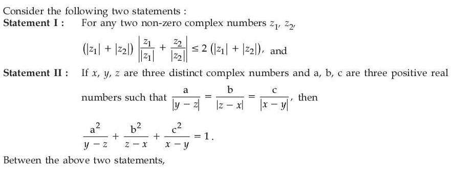
Hint 1: For statement II, use |w|2 = w w̄ to replace each squared term.
Hint 2: Let the common ratio be k. Then a2/(y − z) = k2|y − z|2/(y − z) = k2(ȳ − z̄).
What this tests: Modulus and conjugate of complex numbers
1. Statement I: |z1/|z1| + z2/|z2|| ≤ 1 + 1 = 2, so the inequality holds. True.
2. Statement II: each term equals k2 times a conjugate difference: k2[(ȳ − z̄) + (z̄ − x̄) + (x̄ − ȳ)] = 0, not 1. False.
Answer: (3)
If this felt hard: The trick |w|2/w = w̄ is worth remembering. Revise properties of modulus and conjugate in Complex Numbers.
Claude’s answer: 3 · NTA final key: 3 · agrees · Theory question: not computable, needs a teacher’s review
Q3 · Mathematics · MCQ · ID 87827055610
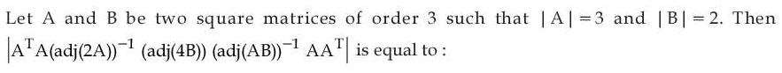
(2) 
Hint 1: Take determinants of everything. For a 3 × 3 matrix, |adj M| = |M|2 and |kM| = k3|M|.
Hint 2: |2A| = 24, |4B| = 128, |AB| = 6. So |adj 2A| = 576, |adj 4B| = 1282, |adj AB| = 36.
What this tests: Determinant of adjoint and scalar multiples
1. Determinant = |A|4 × |adj 4B| / (|adj 2A| × |adj AB|).
2. = 81 × 16384 / (576 × 36) = 64.
Answer: (2)
If this felt hard: Revise |adj A| = |A|n−1 and |kA| = kn|A| in Determinants.
Claude’s answer: 2 · NTA final key: 2 · agrees · Answer recomputed by script (tools/verify_pyq_solutions.py)
Q4 · Mathematics · MCQ · ID 87827055611
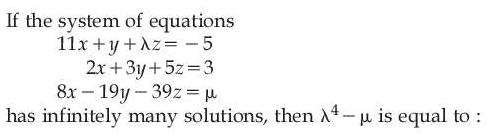
(3) 
Hint 1: Infinitely many solutions needs the coefficient determinant to be zero first.
Hint 2: det = −124 − 62λ = 0 gives λ = −2. Then the third equation must be a combination of the first two.
What this tests: Consistency of linear systems
1. Determinant of coefficients = −124 − 62λ = 0, so λ = −2.
2. Find p, q with p(11, 1, −2) + q(2, 3, 5) = (8, −19, −39): p = 2, q = −7.
3. Then μ = 2(−5) + (−7)(3) = −31.
4. λ4 − μ = 16 + 31 = 47.
Answer: (2)
If this felt hard: Revise the conditions for infinitely many solutions in Determinants.
Claude’s answer: 2 · NTA final key: 2 · agrees · Answer recomputed with SymPy (tools/verify_pyq_solutions.py)
Q5 · Mathematics · MCQ · ID 87827055612
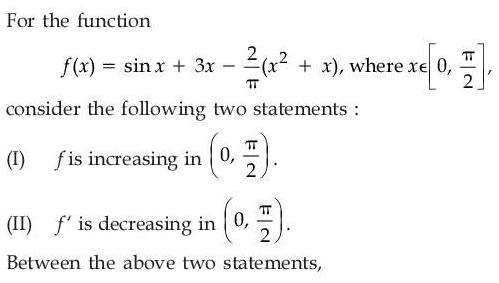
Hint 1: Look at f' and f''. Where is f'' negative? What is f' at the right end?
Hint 2: f'(x) = cos x + 3 − (2/π)(2x + 1), f''(x) = −sin x − 4/π.
What this tests: Monotonicity using first and second derivatives
1. f''(x) = −sin x − 4/π < 0, so f' is decreasing. II true.
2. So f' > f'(π/2) = 3 − 2 − 2/π = 1 − 2/π > 0 on the interval. f is increasing. I true.
Answer: (4)
If this felt hard: Using f' decreasing plus its end value is a neat way to show f' > 0. Revise Application of Derivatives.
Claude’s answer: 4 · NTA final key: 4 · agrees · Answer recomputed with SymPy (tools/verify_pyq_solutions.py)
Q6 · Mathematics · MCQ · ID 87827055613
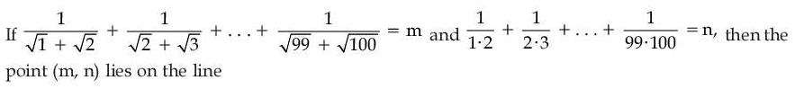
Hint 1: Rationalise each term of m; split each term of n into partial fractions.
Hint 2: 1/(√k + √(k+1)) = √(k+1) − √k and 1/(k(k+1)) = 1/k − 1/(k+1). Both telescope.
What this tests: Telescoping sums
1. m = √100 − √1 = 9.
2. n = 1 − 1/100 = 99/100.
3. Check 11x − 100y = 99 − 99 = 0.
Answer: (1)
If this felt hard: Revise telescoping series in Sequences and Series.
Claude’s answer: 1 · NTA final key: 1 · agrees · Answer recomputed with SymPy (tools/verify_pyq_solutions.py)
Q7 · Mathematics · MCQ · ID 87827055614
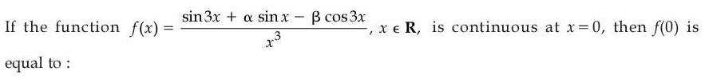
(1) 
(3) 
Hint 1: For the limit to exist, the numerator must vanish fast enough at 0. Use series.
Hint 2: sin 3x = 3x − 9x3/2 + …, sin x = x − x3/6 + …, cos 3x = 1 − …
What this tests: Limits by series expansion; continuity
1. At x = 0 the numerator is −β, so β = 0.
2. x-term: 3 + α = 0, so α = −3.
3. x3-term: −9/2 + 3/6 = −4.
4. f(0) = −4.
Answer: (4)
If this felt hard: Revise expansions of sin x and cos x in Limits.
Claude’s answer: 4 · NTA final key: 4 · agrees · Answer recomputed with SymPy (tools/verify_pyq_solutions.py)
Q8 · Mathematics · MCQ · ID 87827055615
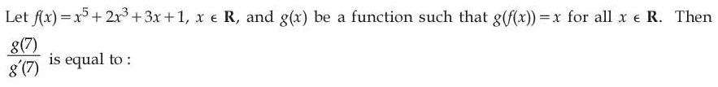
(1) 
(2) 
(4) 
Hint 1: g is the inverse of f. Which x gives f(x) = 7?
Hint 2: f(1) = 7, so g(7) = 1 and g'(7) = 1/f'(1).
What this tests: Derivative of an inverse function
1. f(1) = 1 + 2 + 3 + 1 = 7, so g(7) = 1.
2. f'(x) = 5x4 + 6x2 + 3, f'(1) = 14, so g'(7) = 1/14.
3. g(7)/g'(7) = 14.
Answer: (3)
If this felt hard: Revise (f−1)'(f(a)) = 1/f'(a) in Continuity and Differentiability.
Claude’s answer: 3 · NTA final key: 3 · agrees · Answer recomputed with SymPy (tools/verify_pyq_solutions.py)
Q9 · Mathematics · MCQ · ID 87827055616
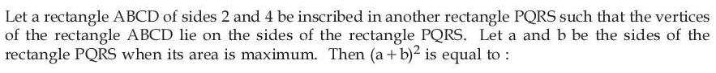
(1) 
(2) 
Hint 1: Tilt the inner rectangle by an angle θ and write the outer sides in terms of θ.
Hint 2: a = 2 cos θ + 4 sin θ, b = 2 sin θ + 4 cos θ. Area = 8 + 10 sin 2θ.
What this tests: Maxima and minima with trigonometry
1. Outer sides: a = 2cos θ + 4 sin θ, b = 2 sin θ + 4 cos θ.
2. ab = 8 + 10 sin 2θ, maximum at θ = 45°.
3. Then a = b = 6/√2 = 3√2, so (a + b)2 = 72.
Answer: (1)
If this felt hard: Revise optimisation in Application of Derivatives.
Claude’s answer: 1 · NTA final key: 1 · agrees · Answer recomputed with SymPy (tools/verify_pyq_solutions.py)
Q10 · Mathematics · MCQ · ID 87827055617
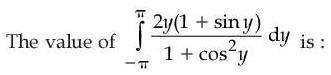
Hint 1: Split the integrand into an odd part and an even part.
Hint 2: 2y/(1 + cos2y) is odd and integrates to 0. For the even part use ∫0π y f(sin y) dy = (π/2)∫0π f(sin y) dy.
What this tests: Definite integrals: odd/even and King's property
1. The odd part gives 0.
2. I = 2∫0π 2y sin y/(1 + cos2y) dy = 4 × (π/2) ∫0π sin y/(1 + cos2y) dy.
3. ∫0π sin y/(1 + cos2y) dy = [−tan−1(cos y)]0π = π/2.
4. I = 2π × π/2 = π2.
Answer: (1)
If this felt hard: Revise properties of definite integrals.
Claude’s answer: 1 · NTA final key: 1 · agrees · Answer recomputed with SymPy (tools/verify_pyq_solutions.py)
Q11 · Mathematics · MCQ · ID 87827055618
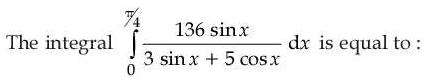
Hint 1: Write the numerator as A(denominator) + B(derivative of denominator).
Hint 2: sin x = (3/34)(3 sin x + 5 cos x) − (5/34)(3 cos x − 5 sin x).
What this tests: Integrals of (a sin x + b cos x)/(c sin x + d cos x)
1. Integral = 136[(3/34)x − (5/34) ln(3 sin x + 5 cos x)] from 0 to π/4.
2. = 4[3π/4 − 5 ln(8/(5√2))] = 3π − 20 ln(4√2/5).
3. ln(4√2) = (5/2) ln 2, so this is 3π − 50 ln 2 + 20 ln 5.
Answer: (4)
If this felt hard: Revise this standard form in Integrals.
Claude’s answer: 4 · NTA final key: 4 · agrees · Answer recomputed with SymPy (tools/verify_pyq_solutions.py)
Q12 · Mathematics · MCQ · ID 87827055619
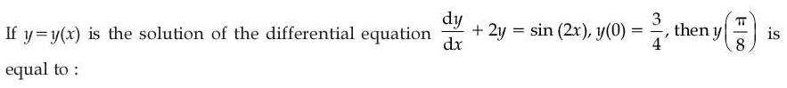
(4)
Hint 1: Linear equation with constant coefficient 2. Try a particular solution of the form A sin 2x + B cos 2x.
Hint 2: y = Ce−2x + (1/4)(sin 2x − cos 2x).
What this tests: Linear differential equations
1. IF = e2x; the solution is y = Ce−2x + (sin 2x − cos 2x)/4.
2. y(0) = C − 1/4 = 3/4, so C = 1.
3. At π/8: sin π/4 = cos π/4, so y = e−π/4.
Answer: (1)
If this felt hard: Revise the integrating factor method in Differential Equations.
Claude’s answer: 1 · NTA final key: 1 · agrees · Answer recomputed with SymPy (tools/verify_pyq_solutions.py)
Q13 · Mathematics · MCQ · ID 87827055620
(1) 
(2)
(3)
(4)
Hint 1: A circle of radius 1 touching x = 3 and y = 2: where can its centre be?
Hint 2: Centre (3 ± 1, 2 ± 1); the one closest to the origin is (2, 1).
What this tests: Circles touching lines; distance from a point to a circle
1. The centre is at (2, 1).
2. Distance from (5, 5) to the centre = √(9 + 16) = 5.
3. Shortest distance to the circle = 5 − 1 = 4.
Answer: (3)
If this felt hard: Revise tangency in Circles.
Claude’s answer: 3 · NTA final key: 3 · agrees · Answer recomputed by script (tools/verify_pyq_solutions.py)
Q14 · Mathematics · MCQ · ID 87827055621
(1)
(2)
(3)
(4)
Hint 1: OP = OQ and the right angle is at O. How is the height from O related to PQ?
Hint 2: In an isosceles right triangle, the altitude to the hypotenuse is half the hypotenuse; here it is 12/5.
What this tests: Straight lines: perpendicular distance and right triangles
1. Distance from O to 3x + 4y = 12 is 12/5.
2. PQ = 2 × 12/5 = 24/5 and OP2 + OQ2 = PQ2.
3. l = 2PQ2 = 2 × 576/25 = 46.08, so [l] = 46.
Answer: (4)
If this felt hard: Revise distance of a point from a line.
Claude’s answer: 4 · NTA final key: 4 · agrees · Answer recomputed with SymPy (tools/verify_pyq_solutions.py)
Q15 · Mathematics · MCQ · ID 87827055622
(1) 
(2)
(3)
(4) 
Hint 1: A circle on AB as diameter, with A and B on the axes, passes through the origin. Compare with the given circle.
Hint 2: Circle: x2 + y2 − (k/2)x − (k/3)y = 0, so k = 6.
What this tests: Circle on a diameter; ellipse latus rectum
1. A = (k/2, 0), B = (0, k/3); the circle is x2 + y2 − (k/2)x − (k/3)y = 0. So k = 6.
2. Ellipse x2/36 + y2/4 = 1: latus rectum = 2b2/a = 8/6 = 4/3.
3. m = 4, n = 3: 2m + n = 11.
Answer: (2)
If this felt hard: Revise the diameter form of a circle and the ellipse latus rectum.
Claude’s answer: 2 · NTA final key: 2 · agrees · Answer recomputed with SymPy (tools/verify_pyq_solutions.py)
Q16 · Mathematics · MCQ · ID 87827055623
(1) 
(2) 
(3) 
(4)
Hint 1: First put both lines in standard form (x − x1)/l = … Watch the signs and the coefficients of y.
Hint 2: Directions: (−3, (4λ + 1)/3, −1) and (3μ, −3, −7). Perpendicular: dot product 0.
What this tests: Angle between lines in 3D
1. Line 1: (x − 2)/(−3) = (y − 2/3)/((4λ + 1)/3) = (z − 4)/(−1).
2. Line 2: (x + 3)/(3μ) = (y − 1/2)/(−3) = (z − 5)/(−7).
3. Dot product: −9μ − (4λ + 1) + 7 = 0, so 4λ + 9μ = 6.
Answer: (3)
If this felt hard: A common slip is reading direction ratios before making x, y, z coefficients 1. Revise Three Dimensional Geometry.
Claude’s answer: 3 · NTA final key: 3 · agrees · Answer recomputed with SymPy (tools/verify_pyq_solutions.py)
Q17 · Mathematics · MCQ · ID 87827055624
(1)
(2)
(3)
(4)
Hint 1: Equate general points of the two lines.
Hint 2: (−6 + 3t, 2t, −1 + t) = (7 + 4s, 9 + 3s, 4 + 2s).
What this tests: Intersection of lines in 3D
1. Solving: s = −1, t = 3, so the point is (3, 6, 2).
2. d2 = 42 + 22 + 72 = 69.
3. d2 + 6 = 75.
Answer: (3)
If this felt hard: Revise Three Dimensional Geometry.
Claude’s answer: 3 · NTA final key: 3 · agrees · Answer recomputed with SymPy (tools/verify_pyq_solutions.py)
Q18 · Mathematics · MCQ · ID 87827055625
(1)
(2)
(3)
(4)
Hint 1: For a (plane) quadrilateral, the area is half the magnitude of the cross product of its diagonals.
Hint 2: Area = (1/2)|AC × BD| with AC = (2, 5, −12), BD = (−6, −11, 4).
What this tests: Vector area of a quadrilateral
1. AC × BD = (−112, 64, 8).
2. |AC × BD| = √16704 = 24√29.
3. Area = 12√29.
Answer: (1)
If this felt hard: Revise cross product and area in Vector Algebra.
Claude’s answer: 1 · NTA final key: 1 · agrees · Answer recomputed with SymPy (tools/verify_pyq_solutions.py)
Note: The four points are coplanar (checked), so the diagonal formula applies.
Q19 · Mathematics · MCQ · ID 87827055626
(1)
(2)
(3)
(4)
Hint 1: Repeated roots need b2 = 4ac. So b must be even.
Hint 2: Check b = 2, 4, 6, 8 and count pairs (a, c) with ac = b2/4.
What this tests: Probability with discriminant condition
1. b = 2: ac = 1 → 1 way. b = 4: ac = 4 → 3 ways. b = 6: ac = 9 → 1 way. b = 8: ac = 16 → 3 ways.
2. Favourable = 8, total = 83 = 512.
3. Probability = 1/64.
Answer: (4)
If this felt hard: Revise counting cases in Probability.
Claude’s answer: 4 · NTA final key: 4 · agrees · Answer recomputed by script (tools/verify_pyq_solutions.py)
Note: Coefficients may repeat (chosen with replacement), as the key assumes.
Q20 · Mathematics · MCQ · ID 87827055627
(1)
(2)
(3)
(4)
Hint 1: Square after isolating sin θ, then pick the root that fits [0, π/4].
Hint 2: 3 sin θ = 4 cos θ − 1 gives 25c2 − 8c − 8 = 0 with c = cos θ.
What this tests: Trigonometric equations
1. 25c2 − 8c − 8 = 0, so c = (4 ± 6√6)/25. For θ in [0, π/4] take c = (4 + 6√6)/25 ≈ 0.75.
2. 4/(3√6 − 2) = 4(3√6 + 2)/50 = (6√6 + 4)/25. Same.
Answer: (2)
If this felt hard: Squaring can add roots; always check the interval. Revise Trigonometric Equations.
Claude’s answer: 2 · NTA final key: 2 · agrees · Answer recomputed with SymPy (tools/verify_pyq_solutions.py)
Q21 · Mathematics · Numerical · ID 87827055628
Hint 1: Write a = n + f with n = [a]. Then the right side is 2a + n. Split on the sign of 2a − 1.
Hint 2: a ≥ 1/2 gives n = −1, impossible. a < 1/2 gives a = (1 − n)/4.
What this tests: Greatest integer and fractional part equations
1. RHS = 3n + 2f = 2a + n.
2. If a ≥ 1/2: 2a − 1 = 2a + n, so n = −1, but then a < 0. No solution.
3. If a < 1/2: 1 − 2a = 2a + n, a = (1 − n)/4. Need [a] = n: only n = 0 works, a = 1/4.
4. 72 × 1/4 = 18.
Answer: 18
If this felt hard: Revise [x] and {x} in Relations and Functions.
Claude’s answer: 18 · NTA final key: 18 · agrees · Answer recomputed with SymPy (tools/verify_pyq_solutions.py)
Q22 · Mathematics · Numerical · ID 87827055629
Hint 1: Substitute t = x + 1. What is |x||x + 2| in terms of t?
Hint 2: |x||x + 2| = |t2 − 1|. With u = |t|: |u2 − 1| − 5u − 1 = 0.
What this tests: Equations with modulus
1. For u ≥ 1: u2 − 5u − 2 = 0, u = (5 + √33)/2 (the other root is negative).
2. For 0 ≤ u < 1: −u2 − 5u = 0, u = 0.
3. t = 0 or t = ±(5 + √33)/2: 3 roots.
Answer: 3
If this felt hard: Revise solving modulus equations by cases.
Claude’s answer: 3 · NTA final key: 3 · agrees · Answer recomputed with SymPy (tools/verify_pyq_solutions.py)
Q23 · Mathematics · Numerical · ID 87827055630
Hint 1: Each die shows 1 to 6. Shift to 0 to 5 and count solutions of a sum.
Hint 2: Count y1 + y2 + y3 + y4 = 12 with 0 ≤ yi ≤ 5 by inclusion–exclusion.
What this tests: Counting with inclusion–exclusion
1. Without the upper limit: C(15, 3) = 455.
2. Subtract cases with some yi ≥ 6: 4 × C(9, 3) = 336.
3. Add back two yi ≥ 6: 6 × C(3, 3) = 6.
4. 455 − 336 + 6 = 125.
Answer: 125
If this felt hard: Revise stars and bars with upper bounds in Permutations and Combinations.
Claude’s answer: 125 · NTA final key: 125 · agrees · Answer recomputed by script (tools/verify_pyq_solutions.py)
Q24 · Mathematics · Numerical · ID 87827055631
Hint 1: Find the powers of x in the general term of the binomial, then match with 1, 2x and −3x3.
Hint 2: Tr+1 = C(9,r)(3/2)9−r(−1/3)r x18−3r. Need x0 (with 1) and x−3 (with −3x3); x−1 is impossible.
What this tests: Constant term in a binomial product
1. x0: r = 6: C(9,6)(3/2)3(1/3)6 = 7/18.
2. x−3: r = 7: −3 × C(9,7)(3/2)2(−1/3)7 = 1/9.
3. p = 7/18 + 2/18 = 1/2, so 108p = 54.
Answer: 54
If this felt hard: Revise the general term in Binomial Theorem.
Claude’s answer: 54 · NTA final key: 54 · agrees · Answer recomputed with SymPy (tools/verify_pyq_solutions.py)
Q25 · Mathematics · Numerical · ID 87827055632
Hint 1: a12 − a22 = (a1 − a2)(a1 + a2). What is a1 − a2 in an AP?
Hint 2: Ak = −d × (sum of the first 2k terms).
What this tests: Arithmetic progression sums
1. A3 = −d(6a + 15d) = −153, A5 = −d(10a + 45d) = −435.
2. Solving: d = 3, a = 1 (positive terms). Check: 1 + 16 + 49 = 66.
3. a17 = 49, A7 = −3 × S14 = −3 × 287 = −861.
4. a17 − A7 = 910.
Answer: 910
If this felt hard: Revise AP sums in Sequences and Series.
Claude’s answer: 910 · NTA final key: 910 · agrees · Answer recomputed with SymPy (tools/verify_pyq_solutions.py)
Q26 · Mathematics · Numerical · ID 87827055633
Hint 1: The limit is a derivative with respect to t at t = x.
Hint 2: 2xf(x) − x2f'(x) = 1, i.e. (f/x2)' = −1/x4.
What this tests: Limits as derivatives; differential equations
1. 2xf − x2f' = 1.
2. (f/x2)' = −1/x4, so f/x2 = 1/(3x3) + C; f(1) = 1 gives C = 2/3.
3. f(x) = 1/(3x) + 2x2/3: f(2) = 17/6, f(3) = 55/9.
4. 2f(2) + 3f(3) = 17/3 + 55/3 = 24.
Answer: 24
If this felt hard: Revise the definition of the derivative and linear DEs.
Claude’s answer: 24 · NTA final key: 24 · agrees · Answer recomputed with SymPy (tools/verify_pyq_solutions.py)
Q27 · Mathematics · Numerical · ID 87827055634
Hint 1: Find where the parabolas meet, then integrate top minus bottom.
Hint 2: They meet at x = 0 and x = 6; top curve y = 7x − x2.
What this tests: Area between two curves
1. x2 − 5x = 7x − x2 gives x = 0, 6.
2. Area = ∫06 (12x − 2x2) dx = 216 − 144 = 72.
Answer: 72
If this felt hard: Revise Application of Integrals.
Claude’s answer: 72 · NTA final key: 72 · agrees · Answer recomputed with SymPy (tools/verify_pyq_solutions.py)
Q28 · Mathematics · Numerical · ID 87827055635
Hint 1: Write the focal chord length and the distance from the origin in terms of the chord's angle.
Hint 2: For y2 = 4ax: focal chord length 4a/sin2θ, distance from O to the chord a sin θ.
What this tests: Focal chord of a parabola
1. a = 3: l = 12/sin2θ.
2. The chord passes through (3, 0) with inclination θ: d = 3 sin θ.
3. l d2 = 12 × 9 = 108 (independent of θ).
Answer: 108
If this felt hard: Revise focal chords in Conic Sections.
Claude’s answer: 108 · NTA final key: 108 · agrees · Answer recomputed with SymPy (tools/verify_pyq_solutions.py)
Q29 · Mathematics · Numerical · ID 87827055636
Hint 1: Move everything to one side: what does (vector) × c = 0 tell you?
Hint 2: (a + 2b) × c + 3(a × c) = 0 gives (4a + 2b) × c = 0, so c is parallel to 2a + b.
What this tests: Cross product equations
1. c = μ(2a + b) = μ(4, −7, 15).
2. a·c = μ(4 + 21 + 105) = 130μ = 130, so μ = 1.
3. b·c = 8 + 7 + 15 = 30.
Answer: 30
If this felt hard: Revise properties of the cross product (c × a = −a × c).
Claude’s answer: 30 · NTA final key: 30 · agrees · Answer recomputed with SymPy (tools/verify_pyq_solutions.py)
Q30 · Mathematics · Numerical · ID 87827055637
Hint 1: Sampling without replacement: X has a hypergeometric distribution.
Hint 2: Var = n(K/N)(1 − K/N)(N − n)/(N − 1).
What this tests: Variance of a random variable
1. N = 10, K = 3, n = 5.
2. Var = 5 × 0.3 × 0.7 × 5/9 = 7/12.
3. 96σ2 = 56.
Answer: 56
If this felt hard: You can also list P(X = 0..3) and use E[X2] − (E[X])2. Revise Probability.
Claude’s answer: 56 · NTA final key: 56 · agrees · Answer recomputed with SymPy (tools/verify_pyq_solutions.py)
Q31 · Physics · MCQ · ID 87827055638
(1)
(2)
(3)
(4)
Hint 1: Write the dimensions of energy density and of G, then multiply.
Hint 2: [u] = ML−1T−2, [G] = M−1L3T−2.
What this tests: Dimensional analysis
1. [uG] = L2T−4, so [√(uG)] = LT−2: an acceleration.
2. Force per unit mass has dimensions LT−2.
3. Potential and energy per unit mass are L2T−2; pressure gradient per unit mass is L−2T−2.
Answer: (1)
If this felt hard: Revise dimensions of G and energy density in Units and Measurements.
Claude’s answer: 1 · NTA final key: 1 · agrees · Theory question: not computable, needs a teacher’s review
Q32 · Physics · MCQ · ID 87827055639
(1)
(2)
(3)
(4)
Hint 1: Add the two vectors first.
Hint 2: (2Q + 2P) + (2Q − 2P) = 4Q.
What this tests: Vector addition
1. The resultant is 4Q, parallel to Q.
2. Angle = 0°.
Answer: (4)
If this felt hard: Simplify before applying any formula. Revise vectors in Motion in a Plane.
Claude’s answer: 4 · NTA final key: 4 · agrees · Theory question: not computable, needs a teacher’s review
Q33 · Physics · MCQ · ID 87827055640
(1)
(2)
(3)
(4)
Hint 1: The system accelerates downward. Is the normal force more or less than the weight?
Hint 2: N = m(g − a) with m = 30 kg.
What this tests: Newton's laws: apparent weight
1. Total mass 30 kg, accelerating down at 0.1 m s−2.
2. mg − N = ma, so N = 30(9.8 − 0.1) = 291 N.
3. By Newton's third law, the force on the floor is 291 N.
Answer: (3)
If this felt hard: Revise apparent weight in Laws of Motion.
Claude’s answer: 3 · NTA final key: 3 · agrees · Answer recomputed by script (tools/verify_pyq_solutions.py)
Note: Uses g = 9.8 m s^{−2} (not stated in the question; g = 10 gives 297 N, also an option). Teacher may want to note this.
Q34 · Physics · MCQ · ID 87827055641
(1)
(2)
(3)
(4)
Hint 1: Does work against gravity depend on the path?
Hint 2: Gravity is conservative: W = mgh in both cases.
What this tests: Conservative forces
1. Work against gravity = mgh, path-independent.
2. Both cases lift 50 kg through 20 m: ratio 1 : 1.
Answer: (4)
If this felt hard: Revise Work, Energy and Power.
Claude’s answer: 4 · NTA final key: 4 · agrees · Theory question: not computable, needs a teacher’s review
Note: Assumes no friction on the ramp, as intended.
Q35 · Physics · MCQ · ID 87827055642
(1)
(2)
(3) 
(4)
Hint 1: Find each moment of inertia about the given axis. For the cylinder, the axis is a diameter of one end face.
Hint 2: Hollow sphere: (2/3)MR2. Cylinder about an end-face diameter: MR2/4 + ML2/3 with L = 4R.
What this tests: Moment of inertia and radius of gyration
1. Hollow sphere: k2 = 2R2/3.
2. Solid cylinder (radius R, length 4R): I = MR2/4 + M(16R2)/3 = 67MR2/12, so k2 = 67R2/12.
3. Ratio of k = √((2/3)/(67/12)) = √(8/67). x = 67.
Answer: (2)
If this felt hard: Revise the cylinder about a perpendicular axis plus the parallel-axis theorem in Rotational Motion.
Claude’s answer: 2 · NTA final key: 2 · agrees · Answer recomputed with SymPy (tools/verify_pyq_solutions.py)
Note: Figure: the axis AB passes along a diameter of one end face; the cylinder's diameter is 2R.
Q36 · Physics · MCQ · ID 87827055643
(1)
(2)
(3)
(4)
Hint 1: Recall the energies of a satellite in a circular orbit of radius a.
Hint 2: KE = GMm/2a, PE = −GMm/a, E = −GMm/2a. Escape energy per unit mass from the planet = Gm/r.
What this tests: Orbital energies
1. A: KE = GMm/2a → II.
2. B: PE = −GMm/a → I.
3. C: total = −GMm/2a → IV.
4. D: escape energy per kg = Gm/r → III.
Answer: (2)
If this felt hard: Revise Gravitation: energy of orbiting bodies.
Claude’s answer: 2 · NTA final key: 2 · agrees · Theory question: not computable, needs a teacher’s review
Q37 · Physics · MCQ · ID 87827055644
(1)
(2) 
(3)
(4)
Hint 1: In h = 2T cos θ/(rρg), which θ makes h zero?
Hint 2: h = 0 when cos θ = 0, i.e. θ = 90°.
What this tests: Capillarity and contact angle
1. No rise or fall means θ = 90°, not 0°. Statement I false.
2. The contact angle depends on both solid and liquid. Statement II true.
Answer: (4)
If this felt hard: Revise Mechanical Properties of Fluids.
Claude’s answer: 4 · NTA final key: 4 · agrees · Theory question: not computable, needs a teacher’s review
Q38 · Physics · MCQ · ID 87827055645
(1)
(2)
(3)
(4)
Hint 1: In a cyclic process, Q = W = area enclosed. Read the circle's size along each axis.
Hint 2: The circle runs from 60 to 340 on both axes: 'radius' 140 kPa along P and 140 cc along V.
What this tests: Work in a cyclic process
1. Area = π × (140 × 103 Pa) × (140 × 10−6 m3) = π × 19.6 J ≈ 61.6 J.
2. The cycle is clockwise on the P–V graph, so net work by the gas is positive and heat is absorbed.
Answer: (3)
If this felt hard: A common slip is mixing cc and m3. Revise Thermodynamics.
Claude’s answer: 3 · NTA final key: 3 · agrees · Answer recomputed by script (tools/verify_pyq_solutions.py)
Note: The figure labels the axes 'P (in cc)' and 'V (in kPa)', apparently swapped; the numbers work either way.
Q39 · Physics · MCQ · ID 87827055646
(1)
(2)
(3)
(4)
Hint 1: Closed chamber: the number density is fixed. What does the collision frequency depend on then?
Hint 2: Z ∝ n × mean speed, and mean speed ∝ √T.
What this tests: Kinetic theory: collision frequency
1. Z ∝ √T at fixed density.
2. Z' = Z√(400/300) = 2Z/√3.
Answer: (1)
If this felt hard: Use kelvin temperatures. Revise Kinetic Theory.
Claude’s answer: 1 · NTA final key: 1 · agrees · Answer recomputed by script (tools/verify_pyq_solutions.py)
Q40 · Physics · MCQ · ID 87827055647
(1)
(2)
(3)
(4)
Hint 1: T ∝ 1/√g. How does g change with height?
Hint 2: g' = gR2/(R + h)2, so T ∝ (R + h).
What this tests: Pendulum and variation of g
1. T1 ∝ 2R, T2 ∝ 3R.
2. T1/T2 = 2/3, so 3T1 = 2T2.
Answer: (3)
If this felt hard: Revise Gravitation and Oscillations.
Claude’s answer: 3 · NTA final key: 3 · agrees · Answer recomputed by script (tools/verify_pyq_solutions.py)
Q41 · Physics · MCQ · ID 87827055648
(1)
(2)
(3)
(4)
Hint 1: Compute ke2/(Gmemp). The distance cancels.
Hint 2: k = 9 × 109, e = 1.6 × 10−19 C, G = 6.67 × 10−11, me = 9.1 × 10−31 kg, mp = 1.67 × 10−27 kg.
What this tests: Coulomb vs gravitational force
1. ke2 = 2.3 × 10−28.
2. Gmemp = 1.0 × 10−67.
3. Ratio ≈ 2.3 × 1039.
Answer: (2)
If this felt hard: Revise Electric Charges and Fields (orders of magnitude).
Claude’s answer: 2 · NTA final key: 2 · agrees · Answer recomputed by script (tools/verify_pyq_solutions.py)
Q42 · Physics · MCQ · ID 87827055649
(1)
(2)
(3)
(4)
Hint 1: Follow the wires: which nodes are actually the same point?
Hint 2: The top wire joins the tops of R2, R4, R3; the bottom wire joins their bottoms. So all three are in parallel.
What this tests: Series and parallel resistors
1. R2, R3, R4 in parallel: 1/R = 1/8 + 1/4 + 1/8 = 1/2, R = 2 Ω.
2. With R1: 12 Ω.
3. I = 12/12 = 1 A.
Answer: (3)
If this felt hard: Redraw the circuit by marking nodes. Revise Current Electricity.
Claude’s answer: 3 · NTA final key: 3 · agrees · Answer recomputed by script (tools/verify_pyq_solutions.py)
Note: Node reading from the figure: R_{4}'s diagonal joins the bottom wire to the top-right node.
Q43 · Physics · MCQ · ID 87827055650
(1)
(2)
(3)
(4)
Hint 1: Use Ampère's law with a loop outside the whole cable.
Hint 2: Net current enclosed = I − I = 0.
What this tests: Ampère's circuital law
1. Outside the cable the loop encloses equal and opposite currents.
2. So B = 0 outside.
3. Inside the inner conductor and between the conductors B is not zero.
Answer: (1)
If this felt hard: Revise Moving Charges and Magnetism.
Claude’s answer: 1 · NTA final key: 1 · agrees · Theory question: not computable, needs a teacher’s review
Q44 · Physics · MCQ · ID 87827055651
(1)
(2)
(3)
(4)
Hint 1: Pass current through the big loop B. Since b >> a, the field over A is nearly uniform.
Hint 2: Field at the centre of B: μ0I/(2b). Flux through A = field × πa2.
What this tests: Mutual inductance of coplanar loops
1. B = μ0I/(2b) at the centre.
2. ΦA = μ0Iπa2/(2b).
3. M = Φ/I = μ0πa2/(2b).
Answer: (4)
If this felt hard: Revise Electromagnetic Induction.
Claude’s answer: 4 · NTA final key: 4 · agrees · Answer recomputed by script (tools/verify_pyq_solutions.py)
Q45 · Physics · MCQ · ID 87827055652
(1)
(2)
(3)
(4)
Hint 1: The maximum displacement current equals the maximum conduction current in the circuit.
Hint 2: I0 = V0ωC.
What this tests: Displacement current; capacitive reactance
1. ω = 2π × 4000 = 25133 rad/s.
2. I0 = 40 × 25133 × 12 × 10−6 ≈ 12 A.
Answer: (2)
If this felt hard: Revise Electromagnetic Waves and Alternating Current.
Claude’s answer: 2 · NTA final key: 2 · agrees · Answer recomputed by script (tools/verify_pyq_solutions.py)
Q46 · Physics · MCQ · ID 87827055653
(1)
(2)
(3)
(4)
Hint 1: Where do rays from the focus go after a convex lens?
Hint 2: They emerge parallel.
What this tests: Wavefronts
1. Parallel rays correspond to a plane wavefront.
Answer: (4)
If this felt hard: Revise Wave Optics: wavefronts.
Claude’s answer: 4 · NTA final key: 4 · agrees · Theory question: not computable, needs a teacher’s review
Q47 · Physics · MCQ · ID 87827055654
(1) 
(2)
(3)
(4)
Hint 1: Write Einstein's equation for stopping potential: eV0 = hν − φ.
Hint 2: V0 = (h/e)ν − φ/e: slope h/e; intercept gives the threshold.
What this tests: Photoelectric effect graphs
1. The slope of V0 vs ν is h/e for any metal. Statement I true.
2. M2 has the larger threshold frequency (larger work function), so at the same ν its electrons have less KE. Statement II false.
Answer: (3)
If this felt hard: Revise Dual Nature of Radiation and Matter.
Claude’s answer: 3 · NTA final key: 3 · agrees · Theory question: not computable, needs a teacher’s review
Q48 · Physics · MCQ · ID 87827055655
(1)
(2)
(3)
(4)
Hint 1: For an inverse-square attraction, relate KE, PE and total energy.
Hint 2: U = −2K, E = K + U = −K.
What this tests: Energy in the Bohr model
1. E = U/2, i.e. 2E = U.
Answer: (3)
If this felt hard: Revise Atoms.
Claude’s answer: 3 · NTA final key: 3 · agrees · Theory question: not computable, needs a teacher’s review
Q49 · Physics · MCQ · ID 87827055656
(1)
(2)
(3)
(4)
Hint 1: Identify each gate, then note the bulb is between two gate outputs. When does current flow?
Hint 2: A: NOR used as NOT. B, C: NAND. Middle: NOR. D: NOR used as NOT. Bulb glows when the two ends are at different levels.
What this tests: Logic gates in a circuit
1. Middle output = NOR(Ā, (BC)̄) = A·B·C. D output = D̄.
2. Option 1: 1 vs 1. Option 2: 0 vs 0. Option 4: 0 vs 0. No glow.
3. Option 3 (A = 1, B = C = D = 0): 0 vs 1, so a voltage appears across the bulb.
Answer: (3)
If this felt hard: Revise NAND/NOR as universal gates in Semiconductor Electronics.
Claude’s answer: 3 · NTA final key: 3 · agrees · Theory question: not computable, needs a teacher’s review
Note: Gate shapes read from an enlarged figure. Reading 'glow' as 'outputs differ'.
Q50 · Physics · MCQ · ID 87827055657
(1)
(2)
(3)
(4)
Hint 1: The mean cannot be more precise than the least precise reading.
Hint 2: Mean = 4.623 s; the least precise reading (4.6 s) has one decimal place.
What this tests: Significant figures
1. Mean = 18.492/4 = 4.623 s.
2. Round to one decimal place: 4.6 s.
Answer: (3)
If this felt hard: Revise rules for addition/averaging in Units and Measurements.
Claude’s answer: 3 · NTA final key: 3 · agrees · Answer recomputed by script (tools/verify_pyq_solutions.py)
Q51 · Physics · Numerical · ID 87827055658
Hint 1: From rest with uniform acceleration, distance in the nth second ∝ (2n − 1).
Hint 2: Sn ∝ 2n − 1.
What this tests: Distance in the nth second
1. S9/S10 = 17/19 = 1 − 2/19.
2. x = 19.
Answer: 19
If this felt hard: Revise Motion in a Straight Line.
Claude’s answer: 19 · NTA final key: 19 · agrees · Answer recomputed by script (tools/verify_pyq_solutions.py)
Note: Assumes uniform acceleration (implied).
Q52 · Physics · Numerical · ID 87827055659
Hint 1: Treat the three blocks as one body.
Hint 2: T1 − (m1 + m2 + m3)g = (m1 + m2 + m3)a.
What this tests: Newton's second law for connected bodies
1. Total mass 20 kg.
2. T1 = 20(10 + 2) = 240 N.
Answer: 240
If this felt hard: Revise Laws of Motion.
Claude’s answer: 240 · NTA final key: 240 · agrees · Answer recomputed by script (tools/verify_pyq_solutions.py)
Q53 · Physics · Numerical · ID 87827055660
Hint 1: The top of a hanging wire carries the weight of the whole wire.
Hint 2: Stress at the top = ρg'L.
What this tests: Breaking stress of a hanging wire
1. g' = 10/3 m s−2.
2. L = 1.2 × 108/(6 × 104 × 10/3) = 600 m.
Answer: 600
If this felt hard: Revise Mechanical Properties of Solids.
Claude’s answer: 600 · NTA final key: 600 · agrees · Answer recomputed by script (tools/verify_pyq_solutions.py)
Q54 · Physics · Numerical · ID 87827055661
Hint 1: Same supply voltage, so energy ∝ capacitance.
Hint 2: Cp = 100 μF; 1/Cs = 1/25 + 1/30 + 1/45.
What this tests: Capacitors in series and parallel
1. Cs = 450/43 μF.
2. Es/E = Cs/Cp = 4.5/43 = 9/86.
3. x = 86.
Answer: 86
If this felt hard: Revise Electrostatic Potential and Capacitance.
Claude’s answer: 86 · NTA final key: 86 · agrees · Answer recomputed by script (tools/verify_pyq_solutions.py)
Q55 · Physics · Numerical · ID 87827055662
Hint 1: E ∝ charge. How does charge fall when a capacitor discharges through R?
Hint 2: q = q0e−t/RC; one third at t = RC ln 3.
What this tests: RC discharge
1. RC ln 3 = 6.6 μs.
2. R = 6.6 × 10−6/(1.5 × 10−6 × 1.1) = 4 Ω.
Answer: 4
If this felt hard: Revise RC circuits.
Claude’s answer: 4 · NTA final key: 4 · agrees · Answer recomputed by script (tools/verify_pyq_solutions.py)
Note: 'log 3' is ln 3 = 1.1.
Q56 · Physics · Numerical · ID 87827055663
Hint 1: Find the wire's length from its resistance first.
Hint 2: L = RA/ρ. Then BIL = mg.
What this tests: Force on a current-carrying wire
1. L = 1 × 10 × 10−6/(2 × 10−6) = 5 m.
2. B = mg/(IL) = 5/(2 × 5) = 0.5 T = 5 × 10−1 T.
Answer: 5
If this felt hard: Revise Moving Charges and Magnetism.
Claude’s answer: 5 · NTA final key: 5 · agrees · Answer recomputed by script (tools/verify_pyq_solutions.py)
Q57 · Physics · Numerical · ID 87827055664
Hint 1: Find XL, XC and Z with ω = 100 rad/s.
Hint 2: XL = 100 Ω, XC = 500 Ω, Z = √(3002 + 4002).
What this tests: Series LCR circuit
1. Z = 500 Ω; Vrms = 50 V; Irms = 0.1 A.
2. VC = I XC = 0.1 × 500 = 50 V.
Answer: 50
If this felt hard: Revise Alternating Current.
Claude’s answer: 50 · NTA final key: 50 · agrees · Answer recomputed by script (tools/verify_pyq_solutions.py)
Q58 · Physics · Numerical · ID 87827055665
Hint 1: Find the fringe width first.
Hint 2: β = λD/d; the nth maximum is at nβ.
What this tests: Young's double slit fringe width
1. β = 5 × 10−7 × 2/(3 × 10−4) = 3.33 mm.
2. Third maximum at 3β = 10 mm.
Answer: 10
If this felt hard: Revise Wave Optics.
Claude’s answer: 10 · NTA final key: 10 · agrees · Answer recomputed by script (tools/verify_pyq_solutions.py)
Q59 · Physics · Numerical · ID 87827055666
Hint 1: Mass defect = 3 × (mass of He) − (mass of C-12).
Hint 2: Mass of C-12 = 12.000000 u exactly.
What this tests: Q value of a fusion reaction
1. Δm = 3 × 4.002603 − 12 = 0.007809 u.
2. E = 0.007809 × 931 = 7.27 MeV = 727 × 10−2 MeV.
Answer: 727
If this felt hard: Revise Nuclei.
Claude’s answer: 727 · NTA final key: 727 · agrees · Answer recomputed by script (tools/verify_pyq_solutions.py)
Note: Uses 12.000 u for carbon-12 (by definition; not given in the question).
Q60 · Physics · Numerical · ID 87827055667
Hint 1: Write I = kθ and I = E/(R + G). Then 1/θ is linear in R.
Hint 2: 1/θ = (k/E)(R + G): the slope of the graph is k/E.
What this tests: Galvanometer: figure of merit
1. From (2, 1) and (6, 2): slope = 1/4 per Ω.
2. k = E × slope = 2/4 = 0.5 A/div = 5 × 10−1 A/div.
3. (Intercept 1/2 = kG/E gives G = 2 Ω.)
Answer: 5
If this felt hard: Revise the half-deflection method (experimental skills).
Claude’s answer: 5 · NTA final key: 5 · agrees · Answer recomputed by script (tools/verify_pyq_solutions.py)
Note: Points read from the graph: (2, 1), (4, 3/2), (6, 2).
Q61 · Chemistry · MCQ · ID 87827055668
(1)
(2)
(3)
(4)
Hint 1: Read each statement and ask: is this what Dalton actually said?
Hint 2: Dalton: atoms are indivisible, atoms of one element are identical (including mass).
What this tests: Dalton's atomic theory
1. A, C, E are Dalton's postulates.
2. B (divisible atoms) and D (different properties within an element) contradict them.
3. Incorrect: B and D only.
Answer: (3)
If this felt hard: Revise Some Basic Concepts of Chemistry.
Claude’s answer: 3 · NTA final key: 3 · agrees · Theory question: not computable, needs a teacher’s review
Q62 · Chemistry · MCQ · ID 87827055669
(1)
(2)
(3)
(4)
Hint 1: Draw H2C=CH2 and count every bond.
Hint 2: Every single bond is σ; a double bond is 1σ + 1π.
What this tests: σ and π bonds
1. Four C–H σ bonds + one C–C σ bond = 5σ.
2. One π bond.
Answer: (2)
If this felt hard: Revise Chemical Bonding.
Claude’s answer: 2 · NTA final key: 2 · agrees · Answer recomputed by script (tools/verify_pyq_solutions.py)
Q63 · Chemistry · MCQ · ID 87827055670
(1)
(2)
(3)
(4)
Hint 1: Which species appear in the equilibrium constant expression?
Hint 2: Pure solids and liquids do not appear in K.
What this tests: Le Chatelier's principle; heterogeneous equilibrium
1. Kp = (pCO2/pCO)3: removing CO or adding/removing CO2 shifts it.
2. Adding solid Fe2O3 does not change K's expression, so no shift.
Answer: (4)
If this felt hard: Revise Equilibrium.
Claude’s answer: 4 · NTA final key: 4 · agrees · Theory question: not computable, needs a teacher’s review
Q64 · Chemistry · MCQ · ID 87827055671
(1)
(2)
(3)
(4)
Hint 1: Clocks use the dry (Leclanché) cell. What is reduced at its cathode?
Hint 2: Cathode: MnO2 + NH4+ + e− → MnO(OH) + NH3.
What this tests: Dry cell
1. Mn goes from +4 (MnO2) to +3 (MnO(OH)).
2. Reduction at the cathode.
Answer: (2)
If this felt hard: Revise primary batteries in Electrochemistry.
Claude’s answer: 2 · NTA final key: 2 · agrees · Theory question: not computable, needs a teacher’s review
Q65 · Chemistry · MCQ · ID 87827055672
(1)
(2)
(3)
(4)
Hint 1: Both ions are divalent. What is the formula of the electrolyte?
Hint 2: MX: Λm = λ+ + λ−.
What this tests: Kohlrausch's law
1. One cation and one anion per formula unit.
2. Λm = 57 + 73 = 130 S cm2 mol−1.
Answer: (1)
If this felt hard: Revise Electrochemistry.
Claude’s answer: 1 · NTA final key: 1 · agrees · Answer recomputed by script (tools/verify_pyq_solutions.py)
Q66 · Chemistry · MCQ · ID 87827055673
(1)
(2)
(3)
(4)
Hint 1: Count electrons and protons in each ion.
Hint 2: All have 10 electrons; nuclear charges are 8, 9, 11, 12.
What this tests: Isoelectronic species and ionic radii
1. A: true, all have 10 electrons.
2. B: false, Z differs.
3. C, D: for isoelectronic ions, more protons → smaller. O2− largest, Mg2+ smallest. True.
Answer: (2)
If this felt hard: Revise Classification of Elements and Periodicity.
Claude’s answer: 2 · NTA final key: 2 · agrees · Theory question: not computable, needs a teacher’s review
Q67 · Chemistry · MCQ · ID 87827055674
(1) 
(2) 
(3)
(4) 
Hint 1: Think about the inert pair effect and about the d-electrons in Ga.
Hint 2: Ga (135 pm) is slightly smaller than Al (143 pm) because of poor shielding by 3d electrons.
What this tests: Group 13 trends
1. Statement I: +1 becomes more stable down group 13 (inert pair effect). True.
2. Statement II: Ga is smaller than Al. False.
Answer: (3)
If this felt hard: Revise The p-Block Elements.
Claude’s answer: 3 · NTA final key: 3 · agrees · Theory question: not computable, needs a teacher’s review
Q68 · Chemistry · MCQ · ID 87827055675
(1) 
(2) 
(3)
(4) 
Hint 1: Which boron isotope is more common? What forms when boron burns in air?
Hint 2: 11B is about 80%; boron forms B2O3 (and BN) on heating in air.
What this tests: Boron chemistry
1. 11B has 11 − 5 = 6 neutrons: x = 6.
2. In B2O3 boron is +3: y = 3.
3. x + y = 9.
Answer: (3)
If this felt hard: Revise The p-Block Elements (group 13).
Claude’s answer: 3 · NTA final key: 3 · agrees · Answer recomputed by script (tools/verify_pyq_solutions.py)
Note: BN (also +3) gives the same y.
Q69 · Chemistry · MCQ · ID 87827055676
(1)
(2)
(3)
(4)
Hint 1: Which 3d metal has the widest range of oxidation states?
Hint 2: Mn shows +2 to +7.
What this tests: Oxidation states of 3d metals
1. Mn has the most oxidation states (+2 to +7) and the highest (+7) among these.
Answer: (3)
If this felt hard: Revise The d- and f-Block Elements.
Claude’s answer: 3 · NTA final key: 3 · agrees · Theory question: not computable, needs a teacher’s review
Q70 · Chemistry · MCQ · ID 87827055677
(1)
(2)
(3)
(4)
Hint 1: Recall the spectrochemical series.
Hint 2: I− < Br− < Cl− < F− < OH− < H2O < NH3 < en < CN− < CO.
What this tests: Spectrochemical series
1. Br− < F− < H2O < NH3 matches the series.
2. The others misplace F/Br/I, NH3/CN− or Br−/OH−.
Answer: (1)
If this felt hard: Revise Coordination Compounds.
Claude’s answer: 1 · NTA final key: 1 · agrees · Theory question: not computable, needs a teacher’s review
Q71 · Chemistry · MCQ · ID 87827055678
(1)
(2)
(3)
(4)
Hint 1: Water is a weak-field ligand here. Count unpaired electrons for each M2+.
Hint 2: Cr2+ d4, Mn2+ d5, Fe2+ d6, Co2+ d7, all high spin.
What this tests: High-spin complexes and magnetism
1. Unpaired: Cr2+ 4, Mn2+ 5, Fe2+ 4, Co2+ 3.
2. Least paramagnetic: [Co(H2O)6]2+.
Answer: (4)
If this felt hard: Revise CFT in Coordination Compounds.
Claude’s answer: 4 · NTA final key: 4 · agrees · Answer recomputed by script (tools/verify_pyq_solutions.py)
Q72 · Chemistry · MCQ · ID 87827055679
(1) 
(2)
(3)
(4)
Hint 1: Strong acid + strong base: what is the only reaction that happens?
Hint 2: H+ + OH− → H2O, about −57 kJ per mole of water.
What this tests: Enthalpy of neutralisation
1. Both are fully ionised, so the reaction is always H+ + OH− → H2O: about −57 kJ mol−1.
2. R gives exactly this definition, and it explains A.
Answer: (1)
If this felt hard: Revise Thermodynamics (enthalpies of reaction).
Claude’s answer: 1 · NTA final key: 1 · agrees · Theory question: not computable, needs a teacher’s review
Note: Teacher look: 'always −57 kJ' is the textbook value (more precisely −57.1 to −55.8 kJ depending on the source); NTA accepts it as true.
Q73 · Chemistry · MCQ · ID 87827055680
(1)
(2)
(3)
(4)
Hint 1: Find the empirical formula from percentages, then scale to M = 342.
Hint 2: C: 42.1/12, H: 6.4/1, O: 51.5/16.
What this tests: Empirical and molecular formula
1. Mole ratio C : H : O = 3.51 : 6.4 : 3.22 ≈ 12 : 22 : 11.
2. C12H22O11 has M = 342 (sucrose).
Answer: (1)
If this felt hard: Revise Some Basic Concepts of Chemistry.
Claude’s answer: 1 · NTA final key: 1 · agrees · Answer recomputed by script (tools/verify_pyq_solutions.py)
Q74 · Chemistry · MCQ · ID 87827055681
(1)
(2) 
(3) 
(4)
Hint 1: What makes the electrophile in nitration? And what kind of catalyst helps electrophilic substitution: acid or base?
Hint 2: Protonated nitric acid loses water to give NO2+. Lewis acids (not bases) generate electrophiles.
What this tests: Electrophilic aromatic substitution
1. Statement I: H2O+–NO2 ⇌ H2O + NO2+ is a real step. True.
2. Statement II: a Lewis base would not help; a Lewis acid does. False.
Answer: (3)
If this felt hard: Revise nitration in Hydrocarbons.
Claude’s answer: 3 · NTA final key: 3 · agrees · Theory question: not computable, needs a teacher’s review
Q75 · Chemistry · MCQ · ID 87827055682
(1)
(2)
(3)
(4)
Hint 1: Compare intermolecular forces: none, dipole–dipole, H-bonding.
Hint 2: Alkane < ether < ketone < alcohol for similar molar masses.
What this tests: Boiling points and intermolecular forces
1. Pentane (B): only dispersion forces, lowest.
2. Ether (A): weak dipole.
3. Ketone (C): stronger dipole.
4. Alcohol (D): hydrogen bonding, highest.
B < A < C < D.
Answer: (2)
If this felt hard: Revise Alcohols, Phenols and Ethers and Aldehydes and Ketones.
Claude’s answer: 2 · NTA final key: 2 · agrees · Theory question: not computable, needs a teacher’s review
Q76 · Chemistry · MCQ · ID 87827055683
(1) 
(2)
(3) 
(4) 
Hint 1: In trans-2-butene, what happens to the two C–CH3 bond dipoles?
Hint 2: In the trans isomer they cancel (μ = 0); in the cis isomer they add.
What this tests: Geometrical isomers and dipole moment
1. A: cis alkenes are more polar. True.
2. R: trans-2-butene has zero dipole moment. True, and it explains why the cis form is more polar.
Answer: (1)
If this felt hard: Revise Hydrocarbons (alkenes).
Claude’s answer: 1 · NTA final key: 1 · agrees · Theory question: not computable, needs a teacher’s review
Q77 · Chemistry · MCQ · ID 87827055684
(1)
(2)
(3)
(4)
Hint 1: Is the phenol ring already activated enough to react with Br2 without a catalyst?
Hint 2: The –OH group strongly activates the ring.
What this tests: Bromination of phenol
1. Phenol brominates in CHCl3/CS2 without a Lewis acid (giving mainly the mono-bromo product). Statement I false.
2. A Lewis acid such as FeBr3 does polarise Br2 to generate Br+. Statement II true.
Answer: (4)
If this felt hard: Revise Alcohols, Phenols and Ethers.
Claude’s answer: 4 · NTA final key: 4 · agrees · Theory question: not computable, needs a teacher’s review
Q78 · Chemistry · MCQ · ID 87827055685
(1)
(2)
(3)
(4)
Hint 1: What does chlorobenzene give with NaOH at 623 K and 300 atm (Dow process)?
Hint 2: X = sodium phenoxide, Y = phenol. Phenol with concentrated HNO3: trinitration.
What this tests: Dow process; nitration of phenol
1. X = C6H5ONa; Y (after HCl) = phenol.
2. Conc. HNO3 gives 2,4,6-trinitrophenol (picric acid).
Answer: (4)
If this felt hard: Revise Alcohols, Phenols and Ethers.
Claude’s answer: 4 · NTA final key: 4 · agrees · Theory question: not computable, needs a teacher’s review
Q79 · Chemistry · MCQ · ID 87827055686
(1)
(2)
(3)
(4)
Hint 1: N2H4 then KOH in ethylene glycol: which named reaction?
Hint 2: Wolff–Kishner reduction: C=O → CH2.
What this tests: Wolff–Kishner reduction
1. Butan-2-one forms the hydrazone, which loses N2 on heating with KOH.
2. Product: butane.
Answer: (2)
If this felt hard: Revise Aldehydes, Ketones and Carboxylic Acids.
Claude’s answer: 2 · NTA final key: 2 · agrees · Theory question: not computable, needs a teacher’s review
Q80 · Chemistry · MCQ · ID 87827055687
(1)
(2)
(3)
(4)
Hint 1: Ninhydrin detects which functional group?
Hint 2: Free α-amino groups (amino acids, proteins).
What this tests: Tests for proteins
1. Egg albumin is a protein: positive (purple).
2. PVC, starch, cellulose have no amino groups.
Answer: (4)
If this felt hard: Revise Biomolecules.
Claude’s answer: 4 · NTA final key: 4 · agrees · Theory question: not computable, needs a teacher’s review
Q81 · Chemistry · Numerical · ID 87827055688
Hint 1: The energy in the first orbit equals RH; KE = |E|.
Hint 2: (1/2)mv2 = 2.18 × 10−18 J.
What this tests: Bohr model energies
1. v = √(2 × 2.18 × 10−18/9.1 × 10−31) = 2.19 × 106 m/s.
2. = 21.9 × 105 ≈ 22 × 105.
Answer: 22
If this felt hard: Revise Structure of Atom.
Claude’s answer: 22 · NTA final key: 22 · agrees · Answer recomputed by script (tools/verify_pyq_solutions.py)
Q82 · Chemistry · Numerical · ID 87827055689
Hint 1: Draw the Lewis structure of NO2−: 18 valence electrons.
Hint 2: O=N–O− with one lone pair on N.
What this tests: Lewis structures
1. Around N: one double bond (4 e), one single bond (2 e), one lone pair (2 e).
2. Total 8 (an octet).
Answer: 8
If this felt hard: Revise Chemical Bonding.
Claude’s answer: 8 · NTA final key: 8 · agrees · Theory question: not computable, needs a teacher’s review
Q83 · Chemistry · Numerical · ID 87827055690
Hint 1: ΔH = ΔU + ΔngRT. Write the combustion equation to find Δng.
Hint 2: C6H5COOH(s) + 15/2 O2 → 7CO2 + 3H2O(l).
What this tests: ΔH and ΔU
1. Δng = 7 − 7.5 = −0.5.
2. ΔH = −321.30 + (−0.5)(R)(300) = −321.30 − 150R.
3. x = 150.
Answer: 150
If this felt hard: Revise Thermodynamics.
Claude’s answer: 150 · NTA final key: 150 · agrees · Answer recomputed by script (tools/verify_pyq_solutions.py)
Q84 · Chemistry · Numerical · ID 87827055691
Hint 1: Osmotic pressure comes from the difference in particle concentration across the membrane.
Hint 2: π = (ΔiC)RT; NaCl gives 2 × 0.05 = 0.1 M particles.
What this tests: Osmotic pressure and van't Hoff factor
1. Inside 0.2 M, outside 0.1 M particles: difference 0.1 M.
2. π = 0.1 × 0.083 × 300 = 2.49 bar ≈ 25 × 10−1 bar.
Answer: 25
If this felt hard: Revise Solutions.
Claude’s answer: 25 · NTA final key: 25 · agrees · Answer recomputed by script (tools/verify_pyq_solutions.py)
Q85 · Chemistry · Numerical · ID 87827055692
Hint 1: Compare experiments where only one concentration changes.
Hint 2: I → IV: [A] × 4, rate × 4. II → III: [B] × 2, rate × 4.
What this tests: Method of initial rates
1. Order in A = 1.
2. Order in B = 2.
3. Overall order = 3 (check I → II: 3 × 4 = 12, 6 × 10−3 × 12 = 7.2 × 10−2).
Answer: 3
If this felt hard: Revise Chemical Kinetics.
Claude’s answer: 3 · NTA final key: 3 · agrees · Answer recomputed by script (tools/verify_pyq_solutions.py)
Q86 · Chemistry · Numerical · ID 87827055693
Hint 1: Which of these ions is a strong oxidiser in water? (Hint: E°(M3+/M2+) is large.)
Hint 2: Co3+ (d6) is strongly oxidising; Ti2+, V2+, Cr2+ are reducing. Spin-only μ = √(n(n + 2)).
What this tests: Redox behaviour of 3d ions; spin-only moment
1. Co3+ is the oxidising agent (E° Co3+/Co2+ = +1.97 V).
2. As a free d6 ion it has 4 unpaired electrons: μ = √24 = 4.90 ≈ 5 BM.
Answer: 5
If this felt hard: Revise The d- and f-Block Elements.
Claude’s answer: 5 · NTA final key: 5 · agrees · Theory question: not computable, needs a teacher’s review
Note: Teacher look: the key uses the free-ion (high-spin) count for Co^{3+}. In 2024 04Apr_Shift2 Q70 NTA's key treats [Co(H_{2}O)_{6}]^{3+} as low spin (0 unpaired), so the two keys use different pictures of aqueous Co^{3+}.
Q87 · Chemistry · Numerical · ID 87827055694
Hint 1: Which zone of the flame is B, oxidising or reducing? Which of these metals gives a green bead there?
Hint 2: Point B lies in the inner (reducing) zone. In the reducing flame iron gives a green bead; take the salt as an Fe(III) salt (d5).
What this tests: Borax bead test; magnetic moment
1. B is in the reducing zone; the green bead there comes from iron.
2. Fe3+ is d5: 5 unpaired electrons.
3. μ = √35 = 5.92 ≈ 6 BM.
Answer: 6
If this felt hard: Revise salt analysis (borax bead colours) and spin-only moments.
Claude’s answer: 6 · NTA final key: 6 · agrees · Theory question: not computable, needs a teacher’s review
Note: Teacher look: depends on reading B as the reducing zone and the salt as Fe(III); copper also gives a green bead (hot, oxidising flame) which would give 2 BM, and an Fe(II) salt would give 5. NTA's key 6 fits an Fe(III) salt.
Q88 · Chemistry · Numerical · ID 87827055695
Hint 1: Sandmeyer uses Cu(I) salts. Which halides does it give?
Hint 2: CuCl/HCl and CuBr/HBr give ArCl and ArBr. ArI needs only KI; ArF uses Balz–Schiemann.
What this tests: Sandmeyer reaction
1. Chlorobenzene and bromobenzene: Sandmeyer.
2. Iodobenzene: KI (no Cu); fluorobenzene: Balz–Schiemann; astatobenzene: not by Sandmeyer.
3. Count = 2.
Answer: 2
If this felt hard: Revise diazonium salts in Amines.
Claude’s answer: 2 · NTA final key: 2 · agrees · Theory question: not computable, needs a teacher’s review
Q89 · Chemistry · Numerical · ID 87827055696
Hint 1: Conc. H2SO4 sulphonates phenol; then conc. HNO3 replaces the SO3H groups. Where do they go?
Hint 2: A = phenol-2,4-disulphonic acid; B = 2,4,6-trinitrophenol (picric acid).
What this tests: Preparation of picric acid
1. A: C6H3(OH)(SO3H)2: 1 + 6 = 7 O.
2. B: C6H2(OH)(NO2)3: 1 + 6 = 7 O.
3. Total 14.
Answer: 14
If this felt hard: Revise reactions of phenol in Alcohols, Phenols and Ethers.
Claude’s answer: 14 · NTA final key: 14 · agrees · Theory question: not computable, needs a teacher’s review
Q90 · Chemistry · Numerical · ID 87827055697
Hint 1: Bromine water gives a white precipitate with aniline. What is it, and in what mole ratio?
Hint 2: 1 mol aniline (93 g) → 1 mol 2,4,6-tribromoaniline (330 g).
What this tests: Bromination of aniline; percentage yield
1. Moles of aniline = 9.3/93 = 0.1.
2. Theoretical P = 0.1 × 330 = 33 g.
3. Yield = 26.4/33 × 100 = 80%.
Answer: 80
If this felt hard: Revise Amines and stoichiometry.
Claude’s answer: 80 · NTA final key: 80 · agrees · Answer recomputed by script (tools/verify_pyq_solutions.py)
Note: Uses Br = 80.